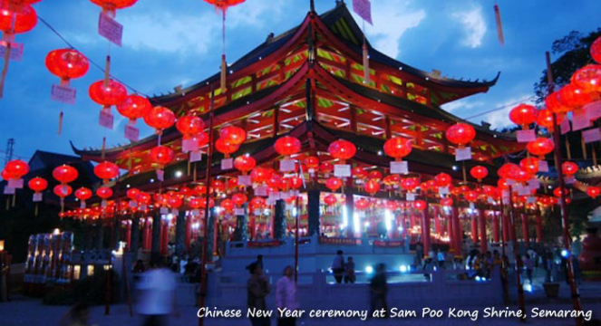
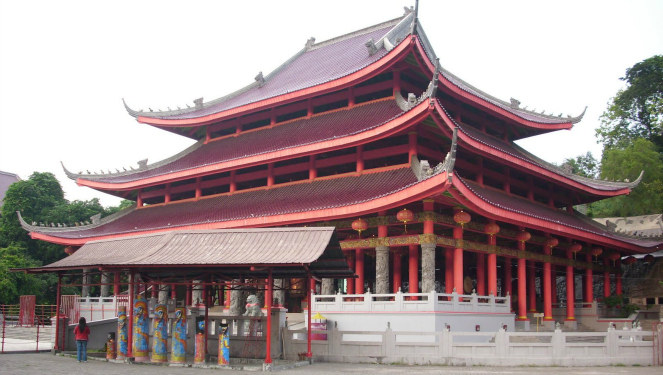

Klenteng Sampokong
Semarang - Klenteng Sam Po Kong selain merupakan tempat ibadah dan ziarah juga merupakan tempat wisata yang menarik untuk di kunjungi. Tempat ini dikenal juga dengan sebutan Gedong Batu. Ada yang mengatakan nama ini dipakai karena asal mula tempat ini adalah sebuah gua batu besar yang terletak pada sebuah bukit batu. Tetapi ada sebagian orang yang mengatakan bahwa sebenarnya asal kata yang benar adalah Kedong Batu, alias tumpukan batu-batu alam yang digunakan untuk membendung aliran sungai.

Komplek Klenteng Sam po Kong terdiri atas sejumlah anjungan yaitu Klenteng Besar dan gua Sam Po Kong, Klenteng Tho Tee Kong, dan empat tempat pemujaan (Kyai Juru Mudi, Kayai Jangkar, Kyai Cundrik Bumi dan mbah Kyai Tumpeng). Klenteng Besar dan gua merupakan bangunan yang paling penting dan merupakan pusat seluruh kegiatan pemujaan. Gua yang memiliki mata air yang tak pernah kering ini dipercaya sebagai petilasan yang pernah ditinggali Sam Po Tay Djien (Zheng He)
Bentuk bangunan klenteng merupakan bangunan tunggal beratap susun. Berbeda dengan tipe klenteng yang lain, klenteng ini tidak memiliki serambi yang terpisah. Pada bagian tengah terdapat ruang pemujaan Sam Po.

Kelenteng Sam Po Kong merupakan bekas tempat persinggahan dan pendaratan pertama seorang Laksamana Tiongkok beragama Islam yang bernama Zheng He / Cheng Ho. Tempat ini biasa disebut Gedung Batu, karena bentuknya merupakan sebuah Gua Batu besar yang terletak pada sebuah bukit batu. Terletak di daerah Simongan, sebelah barat daya Kota Semarang. Hampir di keseluruhan bangunan bernuansa merah khas bangunan China. Untuk keperluan berziarah, di dalam gua batu itu diletakan sebuah altar, serta patung-patung Sam Po Tay Djien. Pada malam Imlek dan Cap Go Meh masyarakat berbondong-bondong ke Kelenteng Gedung Batu Sampo Kong.
Copyright © 2013 DINHUBKOMINFO - Pemerintah Prov. Jawa Tengah. All rights reserved. Developed by : Sera Vika Eviana - 672018025